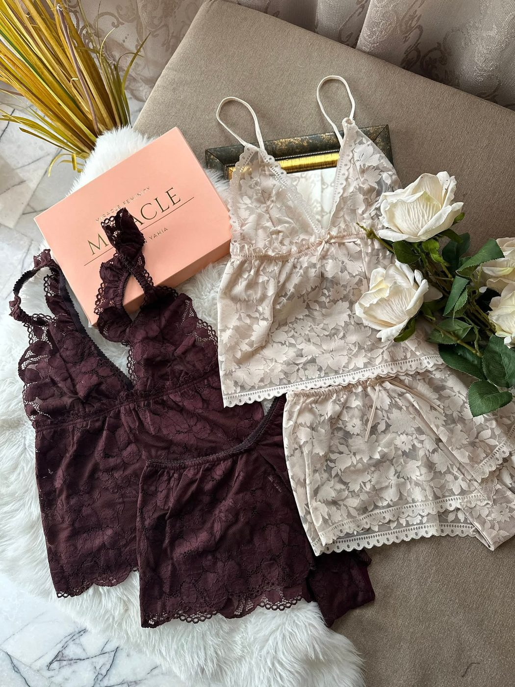

Soutien-gorge armé
Balconnet
Une coupe horizontale et structurée : les bonnets sont soutenus par une armature discrète qui remonte et galbe la poitrine tout en dégageant joliment le haut du buste. Idéal sous un décolleté droit, il apporte un maintien ferme sans sacrifier l'élégance de la dentelle.
Voir les balconnets